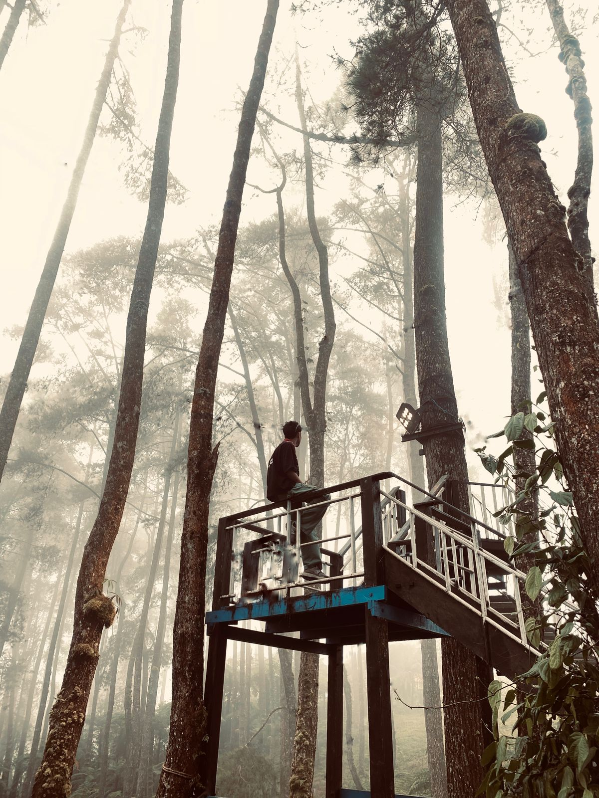
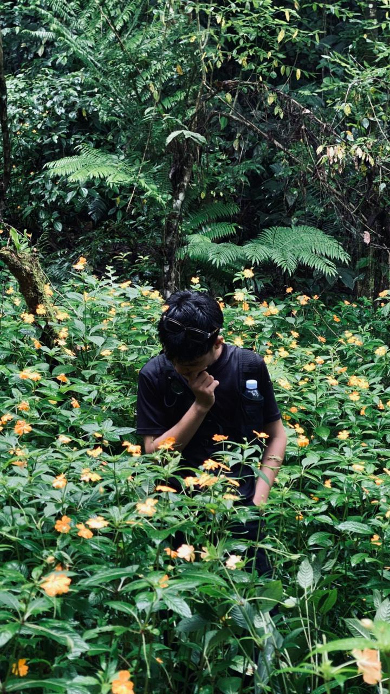
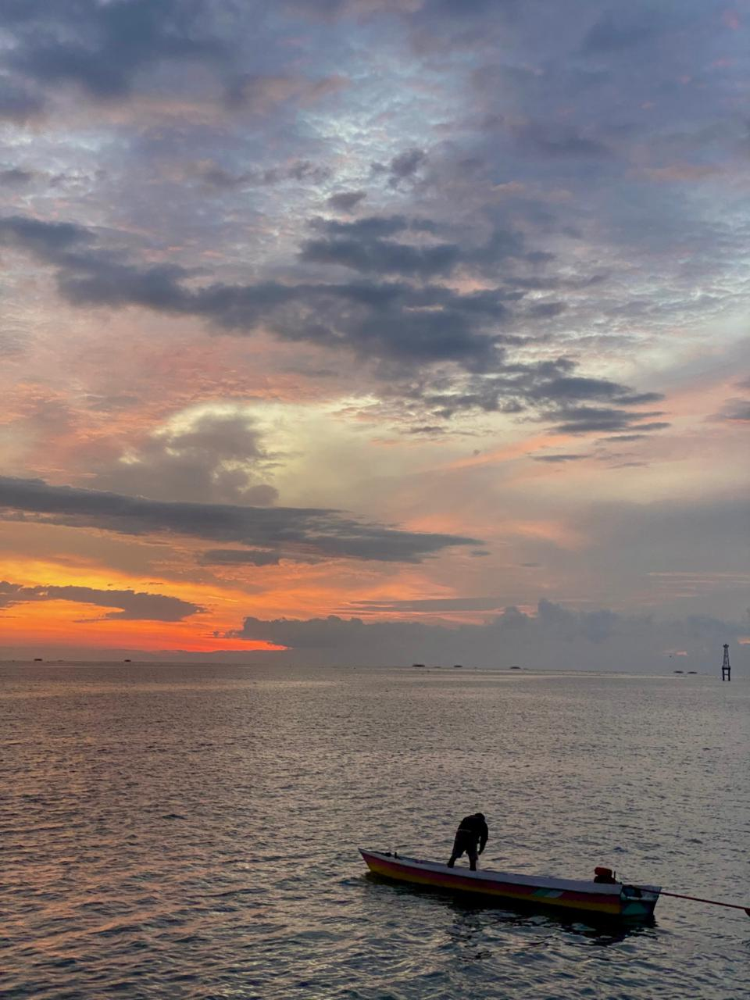
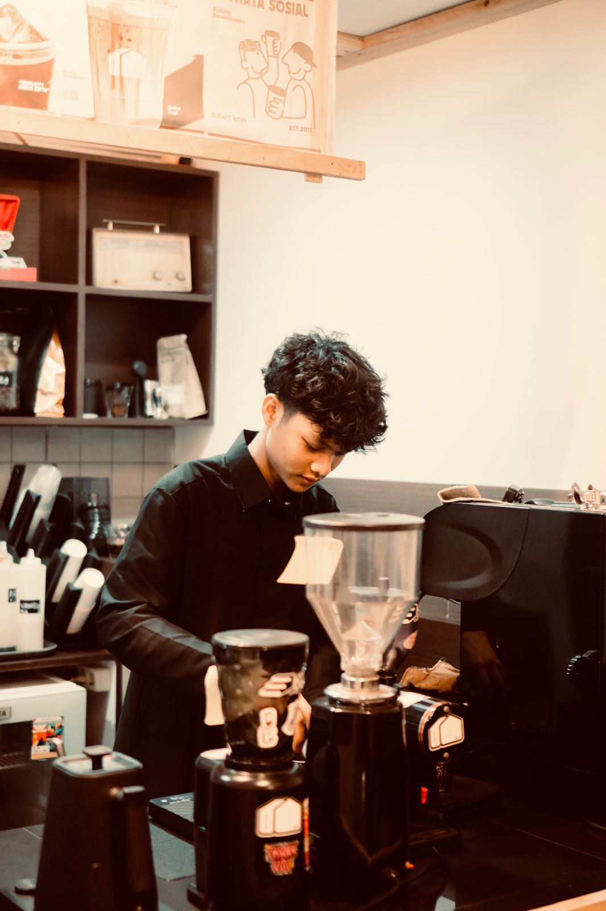
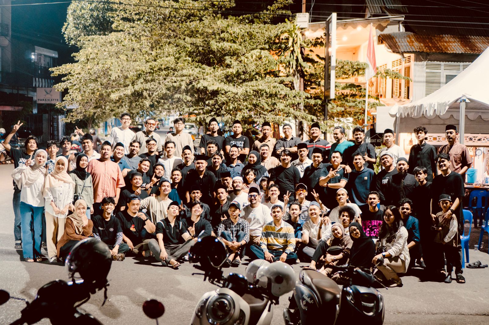

Hi, panggil aku Cil! 👋
Saya alif saya adalah seorang mahasiswa semester 2 prodi teknik informatika, Saya punya ketertarikan yang mendalam pada Dunia Teknologi dan Dunia Kopi. Namun dari semua itu, hal yang paling aku suka adalah memandangi Langit.
Tech Enthusiast
Suka mengulik hal-hal baru di dunia teknologi, dari ngoding sampai memahami bagaimana sistem bekerja di balik layar. Teknologi itu logis dan terus berkembang. "Namun dibalik logika yang terus berkembang, aku hanyalah sebuah alur yang selalu menemui Access Denied. Aku terbiasa bekerja dalam senyap, membangun mimpi di baris kode yang tak pernah di lihat siapa pun, hanya untuk menyaksikan crash sebelum sempat mencapai tujuan.
Aku adalah deklarasi yang tak pernah dipanggil, fungsi yang selalu di mengembalikan nilai kosong. Di dunia yang menuntut kemenangan, aku adalah bug yang menetap yang meski sudah di coba di perbaiki berulang kali melali pahitnya kopi dan luasnya langit, tetap saja berakhir dengan kekalahan yang sama. Terntya, sehebat apapun sistem yang kupelajari, aku tak pernah punya cukup izin (permissions) untuk bahagia."
Coffee Lover
Di sisi lain, aku belajar banyak tentang kopi. Dari metode seduh, biji kopi, hingga bagaimana secangkir kopi bisa memberikan ketenangan di tengah riuhnya dunia yang luas. Dunia mungkin sudah tertidur, meninggalkan aku dalam sunyi yang tak terjemahkan. Di depanku, secangkir kopi menjadi teman bicara yang paling jujur. Ia tak banyak tanya, ia hanya ada. Namun saat cangkir mulai kosong, aku sadar bahwa sepi ini seperti ampas kopi—mengendap di dasar hati, sulit dibuang, dan menjadi saksi betapa aku selalu kalah dalam riuhnya dunia
Sky Gazer
Hal yang paling aku suka dalam hidupku adalah Langit, karena ia adalah satu-satunya entitas yang selalu terbuka untukku. Saat dunia luar terasa seperti sistem yang penuh batasan dan penolakan, langit luas memberikan ruang tanpa syarat. Di bawahnya, aku bebas menjadi baris kode yang tak perlu sempurna, dan bebas merayakan kesunyian yang tak pernah dipahami oleh siapa pun.
Di Balik Kabut Pinus

"Dingin ini tidak untuk dihindari, tapi untuk dinikmati. Karena di balik gigilnya, ada rasa tenang yang tidak bisa ditemukan di tempat bising."
Tersesat dalam Indahnya Semesta

"Mekarlah seperti bunga liar yang tumbuh di sela-sela bebatuan. Tak peduli betapa keras medannya, ia tetap anggun memancarkan warna, berani hidup penuh harapan dalam dekapan alam."
Mahakarya yang Tak Tergapai

"Aku mengagumimu seperti aku mengagumi kanvas langit sore ini dengan rasa takjub yang bercampur dengan pedihnya kenyataan. Kamu adalah mahakarya yang sengaja diletakkan semesta di tempat yang paling tinggi, agar semua orang bisa memuji, tapi tak satu pun bisa mencuri. Kekagumanku adalah sebuah doa yang tak mengharap balasan, sebuah perjalanan yang tahu takkan pernah sampai di tujuan. Bagiku, kamu adalah bukti bahwa hal tercantik di dunia ini memang seringkali diciptakan untuk tetap menjadi misteri yang tak terjamah."
Bahagia di Sudut Coffe

"Menghabiskan waktu di sini bukan lagi soal menyelesaikan kewajiban, tapi tentang merayakan hobi yang dibayar. Pencahayaan yang hangat dan sudut-sudut kayu ini memberikan rasa aman, seolah dunia di luar sana yang bising tidak bisa masuk ke sini. Bekerja di sini adalah tentang menemukan keseimbangan antara fokus yang tajam dan hati yang tetap tenang."
Keluarga Sudut Coffee

"Kami sering menyebut tempat ini sebagai rumah, bukan karena bangunan atau dekorasinya, melainkan karena orang-orang yang mengisinya. Di sini, seragam hanyalah tanda pengenal, namun senyum dan tawa adalah bahasa pemersatu. Antara kami yang menyeduh dan kalian yang datang bertamu, tidak ada lagi sekat kaku bernama transaksi. Kita adalah keluarga yang dipertemukan oleh hobi, disatukan oleh cerita, dan dikuatkan oleh kehadiran satu sama lain di setiap malam yang panjang. Terima kasih telah menjadi bagian dari napas tempat ini; karena tanpa kalian, sudut ini hanyalah ruang kosong yang sunyi."
Magang di Disdukcapil Kota Palopo
- Pelayanan Administrasi Kependudukan
- Manajemen Data dan Kearsipan
- Interaksi Langsung dengan Masyarakat
- Belajar Etos Kerja
- Bekerja dalam Lingkungan Pemerintahan
Frontliner Djaya Bahagia
- Fokus pada pelayanan dan kepuasan pelanggan.
- Menyelesaikan keluhan serta masalah pelanggan.
- Menjaga kebersihan dan kerapihan area.
- Bekerja dengan baik dalam lingkungan tim.
Barista Sudut Coffe
- Menyiapkan dan meracik minuman kopi maupun non-kopi.
- Mengoperasikan mesin espresso dan alat seduh manual (manual brew).
- Memberikan pelayanan yang ramah dan merekomendasikan menu kepada pelanggan.
- Menjaga kebersihan area bar dan merawat peralatan kerja.
- Mengecek dan mengelola ketersediaan stok bahan baku.